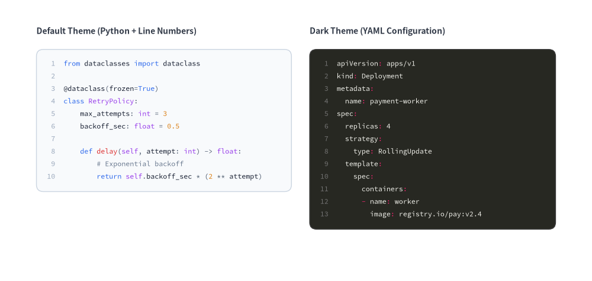
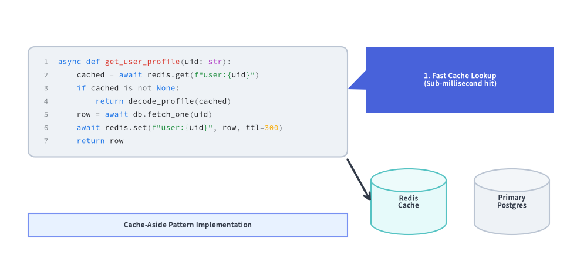

SourceCode
The SourceCode component renders syntax-highlighted source code snippets directly onto the Drawlib canvas as crisp vector shapes and typography powered by Pygments.
Looking for speech bubbles & callouts? The
bubblespeech()primitive is documented in Cylinders, Faces & Callouts.
1. Syntax-Highlighted Code with Line Numbers (SourceCode.draw)
SourceCode.draw(...) (or its function alias sourcecode(...)) renders a syntax-highlighted code block anchored at its top-left corner xy=(x, y). You configure token colors, container styles, font size, and CJK language fonts using SourceCodeStyles.get(...).
from drawlib.canvas import save, setup
from drawlib.smartarts import SourceCode, SourceCodeStyles
from drawlib.styles import Styles
from drawlib.text import text
setup(width=130, height=62)
# 1. Left: Default Light Theme with Python Code
text((8, 55), "Default Theme (Python + Line Numbers)", style=Styles.DarkBold.patch(text_size=10.0, halign="left"))
py_code = """from dataclasses import dataclass
@dataclass(frozen=True)
class RetryPolicy:
max_attempts: int = 3
backoff_sec: float = 0.5
def delay(self, attempt: int) -> float:
# Exponential backoff
return self.backoff_sec * (2 ** attempt)"""
light_styles = SourceCodeStyles.get("default", font_lang="en", text_size=8.5)
SourceCode.draw(
xy=(8, 51),
width=56,
code=py_code,
styles=light_styles,
code_lang="python",
show_linenum=True,
)
# 2. Right: Dark Theme with Kubernetes YAML Config
text((68, 55), "Dark Theme (YAML Configuration)", style=Styles.DarkBold.patch(text_size=10.0, halign="left"))
yaml_code = """apiVersion: apps/v1
kind: Deployment
metadata:
name: payment-worker
spec:
replicas: 4
strategy:
type: RollingUpdate
template:
spec:
containers:
- name: worker
image: registry.io/pay:v2.4"""
dark_styles = SourceCodeStyles.get("dark", font_lang="en", text_size=8.5)
SourceCode.draw(
xy=(68, 51),
width=54,
code=yaml_code,
styles=dark_styles,
code_lang="yaml",
show_linenum=True,
)
save()

2. Annotating Code Blocks in Architecture & Tutorial Diagrams
Because SourceCode.draw() renders directly onto the shared vector canvas, you can combine code containers with callout bubbles (bubblespeech), architecture nodes, and arrows to create annotated code walkthroughs.
from drawlib.canvas import save, setup
from drawlib.lines import line
from drawlib.shapes import bubblespeech, cylinder, rectangle
from drawlib.smartarts import SourceCode, SourceCodeStyles
from drawlib.styles import Styles
setup(width=125, height=58)
# 1. Left: Syntax-Highlighted Code Block
snippet = """async def get_user_profile(uid: str):
cached = await redis.get(f"user:{uid}")
if cached is not None:
return decode_profile(cached)
row = await db.fetch_one(uid)
await redis.set(f"user:{uid}", row, ttl=300)
return row"""
code_styles = SourceCodeStyles.get("google", font_lang="en", text_size=9.0).patch(
box_style=Styles.Neutral.patch(shape_r=1.5),
)
SourceCode.draw(
xy=(6, 48),
width=68,
code=snippet,
styles=code_styles,
code_lang="python",
show_linenum=True,
)
# 2. Callout Bubble pointing to the cache-aside lookup line
bubblespeech(
xy=(78, 34),
width=40,
height=14,
tail_edge="left",
tail_start_ratio=0.35,
tail_end_ratio=0.65,
tail_vertex_xy=(74, 39),
style=Styles.PrimaryFlat.patch(shape_r=1.2),
text="1. Fast Cache Lookup\n(Sub-millisecond hit)",
text_style=Styles.WhiteBold.patch(text_size=8.5),
)
# 3. Downstream Persistence Nodes referenced by the code
cylinder(
xy=(87, 15),
width=16,
height=14,
style=Styles.SecondaryNeutral,
text="Redis\nCache",
text_style=Styles.DarkBold.patch(text_size=8.5),
)
cylinder(
xy=(109, 15),
width=16,
height=14,
style=Styles.Neutral,
text="Primary\nPostgres",
text_style=Styles.DarkBold.patch(text_size=8.5),
)
line((74, 24), (79, 15), arrow_head="->", style=Styles.DarkBold)
rectangle((40, 10), width=68, height=5, style=Styles.PrimaryNeutral, text="Cache-Aside Pattern Implementation", text_style=Styles.DarkBold.patch(text_size=8.5))
save()

3. Themes, Languages & Token Customization (SourceCodeStyles)
Built-in Themes & CJK Font Selection
Use SourceCodeStyles.get(styles, font_lang, *, font=None, text_size=12.0) (or get_source_code_styles(...)):
styles(Theme Name):"default": Clean light slate background with blue/green/red syntax colors."google": Crisp white card with Google-inspired syntax palette."dark"(or"monokai","github-dark"): High-contrast dark theme."monochrome": Grayscale print-safe theme.
font_lang:"en"(default): UsesFontSourceCode.SOURCECODEPRO."ja","zh-cn","zh-tw","ko": Automatically selectsFontSourceCode.SOURCEHANCODEJPso CJK comments and strings render without missing-glyph tofu boxes.
code_lang:- Supports
"python","yaml","json","sql","bash","go","rust","typescript","javascript","html","css","dockerfile","toml","protobuf","c","cpp","java","kotlin","swift","markdown", orNone(auto-detected fromfileextension or content).
- Supports
Customizing Token Styles (SourceCodeStyles & .patch())
SourceCodeStyles is an immutable Pydantic model defining the outer container, gutter line numbers, and 8 syntax token categories. Calling styles.patch(...) returns a new SourceCodeStyles instance with specified fields updated:
from drawlib.smartarts import SourceCodeStyles
from drawlib.styles import Styles
custom_styles = SourceCodeStyles.get("default", font_lang="en", text_size=9.5).patch(
box_style=Styles.Neutral.patch(shape_r=2.0),
keyword=Styles.PrimaryBold,
comment=Styles.Muted,
text_size=9.5, # Updates font size across all token types and line numbers
)
Field / .patch() Argument |
Type | Description |
|---|---|---|
box_style |
Style |
Shape style for the outer code container rectangle (corner radius controlled via shape_r, default 1.5). |
linenum_style |
Style |
Text style for right-aligned line numbers in the left gutter (show_linenum=True). |
default |
Style |
Text style for standard code text and unclassified identifiers. |
keyword |
Style |
Text style for language keywords (e.g. def, class, return, if, import). |
string |
Style |
Text style for string literals. |
comment |
Style |
Text style for single-line and multi-line comments. |
number |
Style |
Text style for integer and floating-point numeric literals. |
function |
Style |
Text style for function and method names. |
type_ (or type in .patch()) |
Style |
Text style for class names, type annotations, and builtin identifiers. |
operator |
Style |
Text style for operators and punctuation symbols. |
text_size (in .patch()) |
float | None |
Convenience parameter in .patch(text_size=...) that updates text_size across linenum_style and all 8 token styles simultaneously. |
4. API Reference
Drawing Code (SourceCode.draw / sourcecode)
SourceCode.draw(
xy: tuple[float, float], # Top-left corner (x, y) of the code container
width: float, # Total container width in canvas units
code: str | None = None, # Source code string (mutually exclusive with `file`)
*,
styles: SourceCodeStyles, # Required style configuration
file: str | Path | None = None, # Path to external source file (mutually exclusive with `code`)
code_lang: str | None = None, # Lexer language name (e.g. "python", "yaml")
show_linenum: bool = False, # Render line numbers in a left gutter
scale: float = 1.0, # Proportional scale factor anchored at `xy`
) -> None
- Function Aliases:
sourcecode(...)is a top-level function alias forSourceCode.draw(...), andget_source_code_styles(...)is a top-level function alias forSourceCodeStyles.get(...). - Height Calculation: Container height is computed automatically from the number of lines in
code(orfile) andstyles.default.text_size. - Loading External Files: Pass
file="path/to/example.py"directly toSourceCode.draw(...), or read the file string viaSourceCode.get_text(file, strip=True).